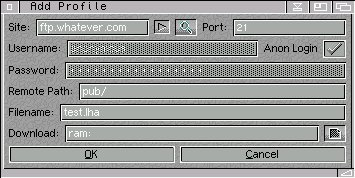
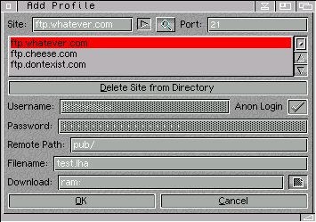

 
General
1. Pressing TAB will cycle through all the gadgets. Pressing return will activate the currently highlighted gadget.
2. Holding the mouse over a gadget for a short period of time will display a helo bubble containing a brief description of the gadgets function.
3. Press help in Go Fetch! to display information about the currently selected window.
Site Textbox
The URL of the site you want to enter. This can either be a standard text URL such as ftp.whatever.com or the site IP address.
Add Site Button (Right Arrow)
Pressing this button will add the site currently in the site text box, into the site directory. Please note, permanent changes to the site directory will only be made, once the add window has been closed.
Popup Site Directory Button
Pressing this will display the site directory. If the site directory is currently displayed, pressing it again will hide the site directory. The site directory is intended as a covenient 'database' to add URLs which you commonly use to prevent you from typing them in.
Site Listview (If Displayed)
This displays all the URLs, currently in the site directory. Double clicking on any URL in the site directory will put that URL into the Site Text Box.
Delete Site from Directory Button (If Displayed, ShortCut D:)
Pressing this button, will delete the currently selected URL from the site directory. Please note, permanent changes to the sited irectory will only be made, once the add window has closed.
Port Textbox
The FTP port of the site you want to access. This is almost always 21 so you should have rare occasion to change it. If you don't know what this is for then you probably won't ever need to change it.
Username Textbox
The login name you need to use to log into the site, or anonymous if Anon Login is ticked.
Anon Login CheckMark
For many FTP sites, you don't need a specialised account to access their files because they allow anonymous login. If you don't have an account on the FTP site, tick this box to perform an anonymous login. Username will contain anonymous and password will contain the default anonymous password you specified as a Tool Type. This is usually your E-Mail address.
Password TextBox
This is the password you need to login into the site. If Anon Login is ticked, it will contain your default anonymous password.
Remote Path Textbox
This should contain the path/location of the file on the remote FTP server. Remember, most FTP servers are UNIX systems, so the path should be case correct too. For example, /pub/system is not the same as /PUB/system .
Filename Textbox
This contains the complete filename of the file you wish to download. Remember, most FTP servers are UNIX systems, so the filename should be case correct. For example, gofetch.lha is not the same as GoFetch.lha .
Download Textbox
This contains the path where you want to download the file to.
File Icon
Pressing this will bring up a file requestor asking where you want to download files to. Once a directory has been chosen, the path will automatically be entered into the Download Textbox.
OK Button
Pressing this will add the new profile to Go Fetch!. It will appear at the bottom of the profile listview.
Cancel Button
Pressing this will discard the current profile and close the Add Window.